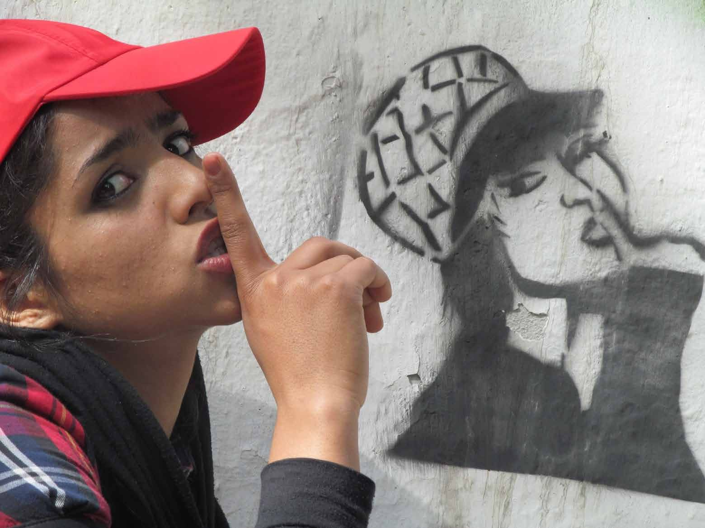
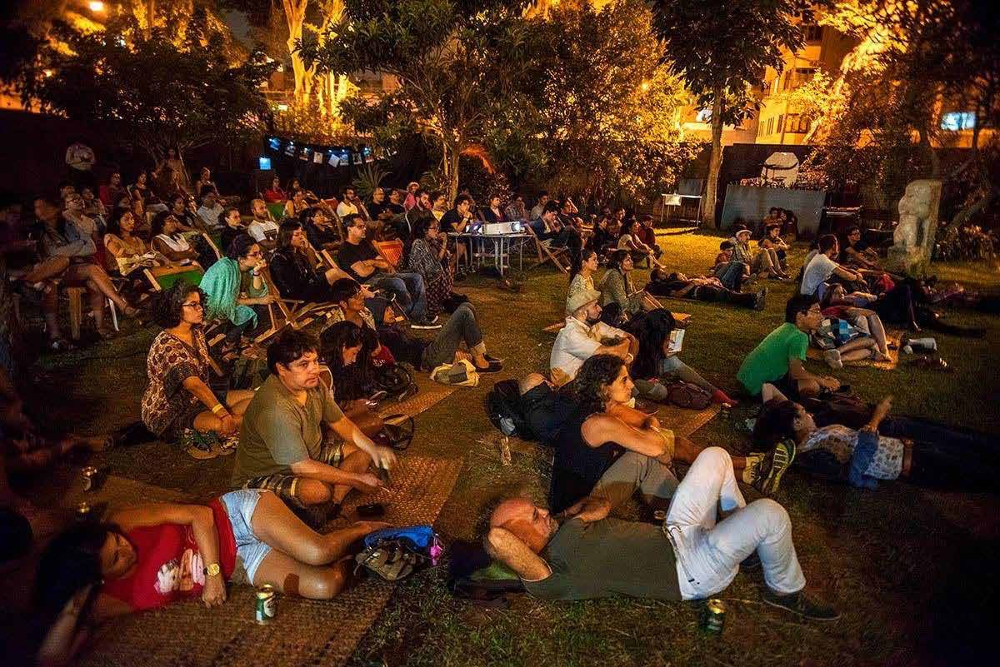
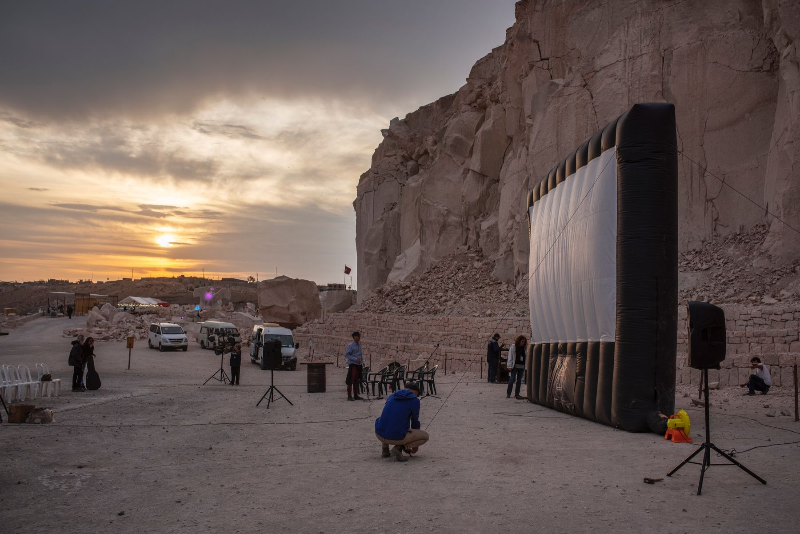
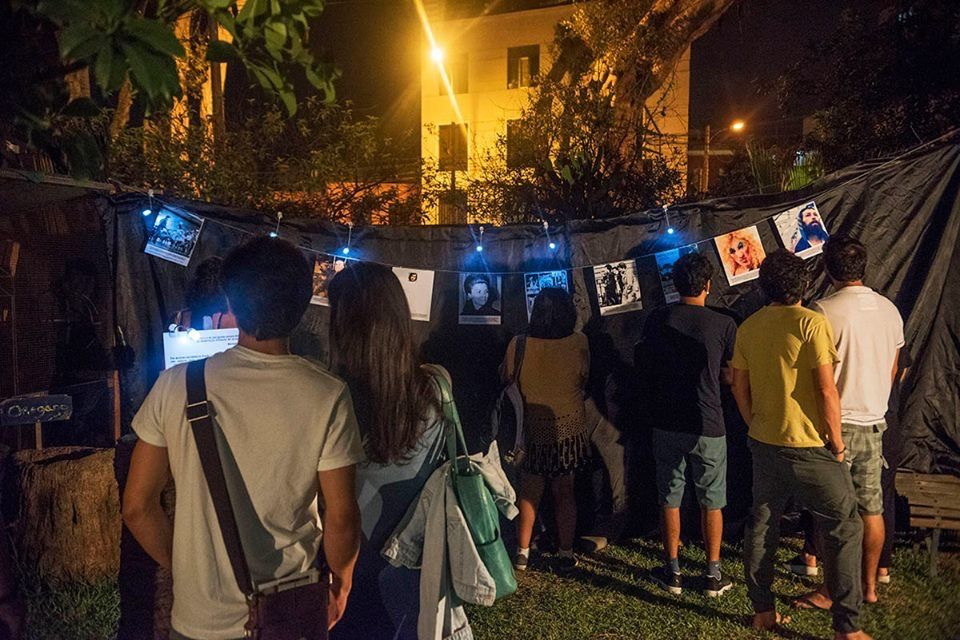
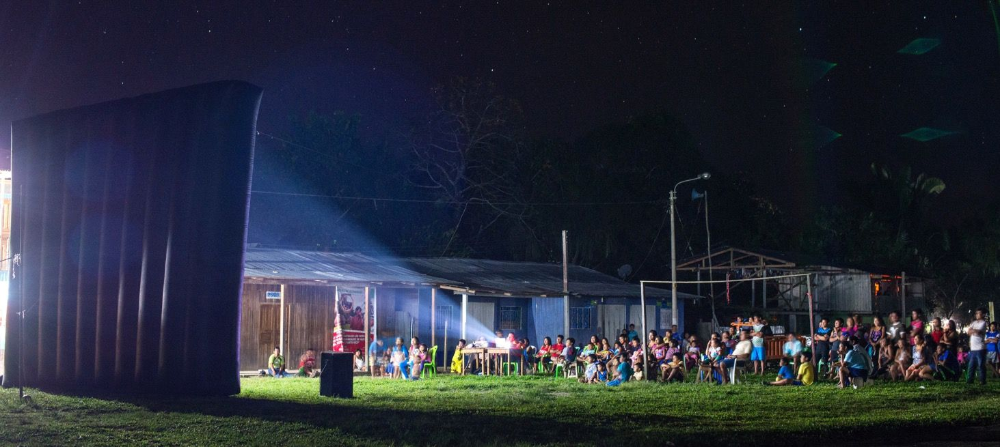
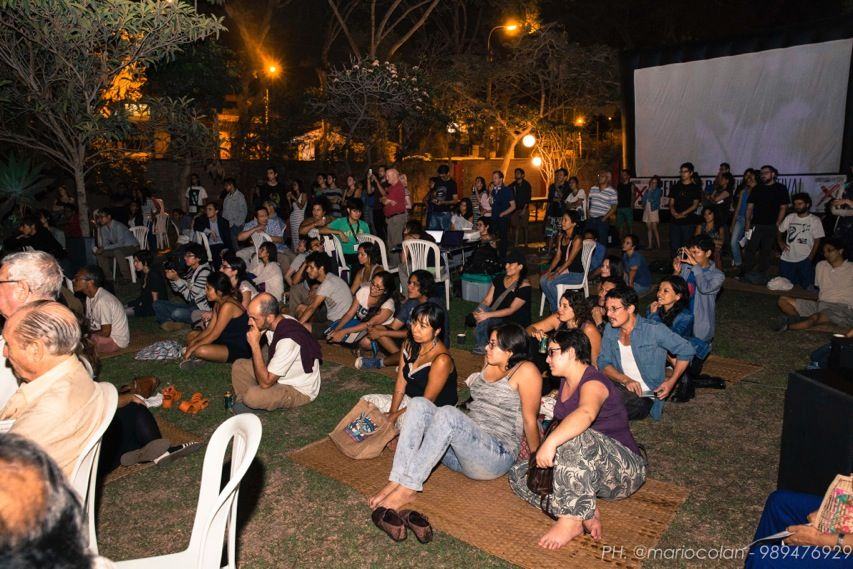
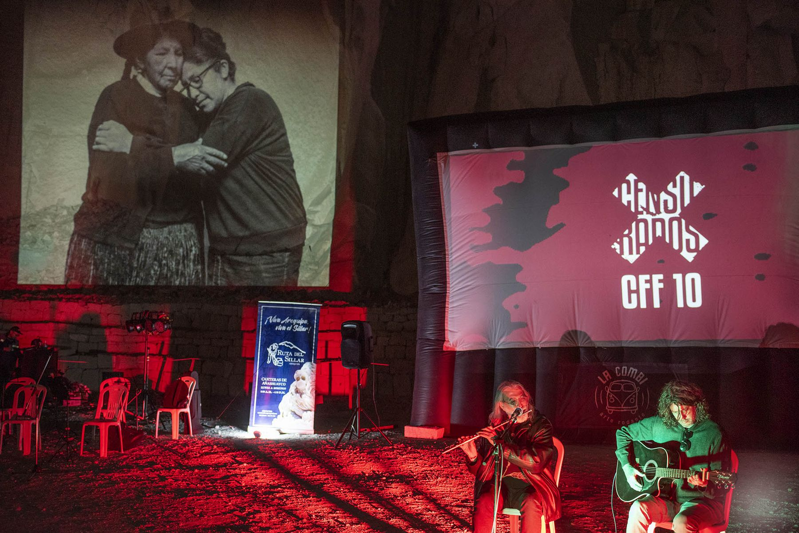
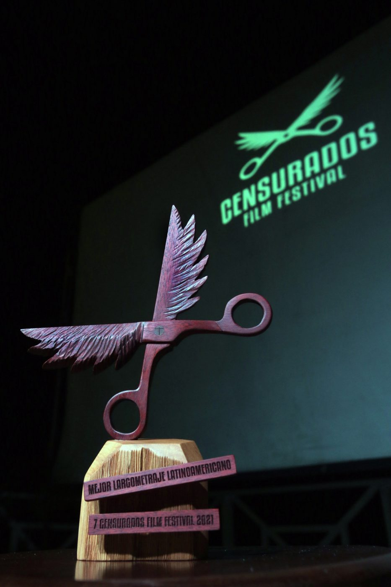

Lo que no quieren que veas
Una ventana para el arte audiovisual desde y hacia la libertad
Somos un festival de cine por la libertad de expresión. Desde 2014 damos espacio a películas censuradas, prohibidas o silenciadas, y a quienes las hacen. No solo proyectamos lo que no puede verse: apostamos por la libertad de crear.
Envía tu película
“Defender nuestra libertad de expresión y la de los que piensan como nosotros es muy fácil. Eso no es defender la libertad de expresión. Lo difícil es defender la libertad de expresión de aquellos que no piensan como nosotros.”
Proyectar lo que no puede verse. Defender la libertad de crear.
Una película censurada es también una persona a la que se le impide seguir creando. Por eso, además de mostrar esas obras, acompañamos a quienes las hacen.
Formamos a gestores y festivales con Festivales que Inspiran, y mantenemos abierta todo el año una convocatoria para películas que sufren censura.
Envía tu películaExplora Censurados

Conócenos Quiénes somos, qué defendemos y quién lo hace posible.
Trayectoria Once ediciones del festival, muestras itinerantes, formación y Festivales que Inspiran.
Archivo vivo Películas censuradas, investigadas y puestas de nuevo a circular.
Convocatoria ¿Tu película ha sido censurada? La convocatoria está abierta todo el año.
Únete Colabora, difunde, firma o apoya el proyecto.Archivo vivo de cine censurado
Películas perseguidas por gobiernos, empresas o iglesias, rodadas a escondidas o firmadas de forma anónima para proteger a quien las hizo. Sus casos, ordenados por años.
Entra en el archivoShe is in jail
Dirección anónima · Hong Kong, 2024
Eternal Spring
Jason Loftus · Canadá, 2022
Behemoth
Zhao Liang · China, 2015
Prohibido
Amal Ramsis · Egipto y España, 2011


Premios Tijera
Nuestro galardón contra la censura: unas tijeras con alas, talladas a mano en madera de palo sangre y capirona.
Desde 2021 premian a la mejor película censurada, a la mejor película internacional y a la mejor película peruana, entre otras categorías. Cada trofeo es una pieza única.
Organizan
Han colaborado: Movies That Matter, Ministerio de Cultura del Perú, Centro Cultural de España en Lima, Amnistía Internacional – Perú, Save the Children Perú, Iber-Rutas, Oxfam Perú, LUM, Embajada de México y CHS Alternativo.